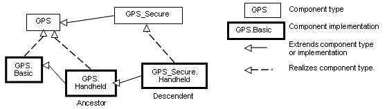

Previous
Next
Previous
Next 
| 4.4 Component Implementations |
A component implementationcontains subcomponents
and their connections, properties, and
component modes. Every component implementation is associated with a component type. A
component type may have zero or more component implementations declared.
A component implementation consists of a collection of
zero or more subcomponent and
subcomponent refinements, connection and connection refinements, subprogram call sequences,
component type feature refinements, flow sequences, and mode declarations; and zero or more
property associations. Flow sequences represent implementations of flow specifications in the
component type, or end-to-end flows to be analyzed. Modes represent alternative operational
modes that may manifest themselves as alternate configurations of subcomponents, connections,
call sequences, flow sequences, and property values.
A component implementation can be declared as an extension
of another component
implementation. In that case, the component implementation inherits the declarations of its
ancestors as well as its component type. A component implementation extension can refine
inherited declarations, and add subcomponents, connections, subprogram call sequences, flow
sequences, mode declarations, and property associations.
Component implementations build on the component type extension
hierarchy in two ways. First,
a component implementation is a realization of a component type (shown as dashed arrows in
Figure 3). As such it inherits features and property associations of its component type and any
component type ancestor. Second, a component implementation declared as extension inherits
subcomponents, connections, subprogram call sequences, flow sequences, modes, property
associations, and annex subclauses from the component implementation being extended (shown
as solid arrows in Figure 3). A component implementation can extend a component
implementation that in turn extends another component implementation, e.g., in Figure 3
GPS.Handheld extends GPS.Basic and is extended by GPS_Secure.Handheld. Component
implementations higher in the extension hierarchy are called ancestors and those lower in the
hierarchy are called descendents. A component implementation can extend another component
implementation of its own component type, e.g., GPS.Handheld extends GPS.Basic, or it can
extend the component implementation of one of its ancestor component types, e.g.,
GPS_Secure.Handheld extends GPS.Handheld, which is an implementation of the ancestor
component type GPS. The component type and implementation extension hierarchy is illustrated
in Figure 3.

Figure 3 Extension Hierarchy of Component Types
and Implementations
A component implementation may also be extended using
an annex_subclause to specify
additional characteristics of the type that are not defined in the core of the AADL (see Section 4.6).
Syntax
component_implementation ::=
component_category implementation
defining_component_implementation_name
[ refines type
( { feature_refinement }+ | none_statement ) ]
[ subcomponents
( { subcomponent }+ | none_statement ) ]
[ calls ( { subprogram_call_sequence
}+ | none_statement ) ]
[ connections (
{ connection }+ | none_statement ) ]
[ flows ( { flow_implementation
|
end_to_end_flow_spec }+ | none_statement ) ]
[ modes ( { mode
}+ { mode_transition }*| none_statement ) ]
[ properties (
{ property_association |
contained_property_association }+
| none_statement ) ]
{ annex_subclause }*
end defining_component_implementation_name ;
component_implementation_name ::=
component_type_identifier
. component_implementation_identifier
component_implementation_extension ::=
component_category implementation
defining_component_implementation_name
extends unique_component_implementation_name
[ refines type
( { feature_refinement }+ | none_statement ) ]
[ subcomponents
( { subcomponent | subcomponent_refinement }+ | none_statement
) ]
[ calls ( { subprogram_call_sequence
}+ | none_statement ) ]
[ connections
( { connection | connection_refinement }+ | none_statement ) ]
[ flows ( { flow_implementation
| flow_implementation_refinement |
end_to_end_flow_spec | end_to_end_flow_spec_refinement }+
| none_statement
) ]
[ modes ( { mode
| mode_refinement | mode_transition }+ |
none_statement ) ]
[ properties (
{ property_association }+ | none_statement ) ]
{ annex_subclause }*
end defining_component_implementation_name
;
unique_component_implementation_name
::=
[package_name ::
] component_implementation_name
NOTES:
The above grammar rules
characterize the common syntax for all component categories. The sections
defining each of the component categories will specify further restrictions on the syntax.
The refines type, subcomponents, connections, calls, flows, modes,
and propertiessubclauses of the
component implementation are optional or if used and empty, require an explicit empty declaration.
The
latter is provided to accommodate AADL modeling guidelines that require explicit documentation of empty
subclauses. An empty subclause declaration consists of the reserved word of the subclause and a none
statement ( none ; ).
The annex_subclause of
the component implementation is optional.
Naming Rules
A component implementation name consists of a component
type identifier and a component
implementation identifier separated by a dot (“.”). The first identifier of the defining
component
implementation name must name a component type that is declared in the same package or
anonymous namespace as the component implementation.
The defining name of the component implementation must
be unique within the anonymous
namespace or within the package namespace of the package within which it is declared.
Every component implementation defines a local namespace
for all defining identifiers of
subcomponents, subprogram calls, connections, flows, and modes declared within the component
implementation. The defining identifier of a subcomponent, subprogram call, connection, flow,
or
mode must be unique within this namespace. For example, a subcomponent and a mode cannot
have the same defining identifier within the same component implementation.
This local namespace inherits the interface namespace
of the associated component type, i.e.,
defining identifiers must be unique within the local namespace and also within the interface
namespace.
Refinement identifiers of features must exist in the
interface namespace of the associated
component type or one of the component type’s ancestors. Refinement identifiers of
subcomponent and connection refinements must exist in the local namespace of an ancestor
component implementation.
In a component implementation extension, the component
type identifier of the component
implementation being extended, which appears after the reserved word extends, must be the same
as or an ancestor of the component type of the extension. The component implementation being
extended may exist in another package. In this case the component implementation name is
qualified with the package name.
When a component implementation extends another
component implementation, the local
namespace of the extension is a superset of the local namespace of the ancestor. That is, the
local namespace of a component implementation inherits all the identifiers in the local namespaces
of its ancestors (including the identifiers of their respective component type interface namespaces).
Within the scope of the component implementation, subcomponent
declarations, connections,
subprogram call sequences, mode transitions, and property associations can refer directly to
identifiers in the local namespace, i.e., to declared subcomponents, connections, and modes, as
well as to required subcomponents and features declared in the associated component type.
Legality Rules
The pair of identifiers separated by a dot (“.”)
following the reserved word endmust be identical to
the pair of identifiers following the reserved word implementation.
The refines type, subcomponents, connections, calls, flows, modes,
and properties
subclauses are optional. If they are present and the set of feature or required subcomponent
declarations or property associations is empty, none followed by a semi-colon must be present
in
that subclause.
The category of the component implementation must match
the category of the component type for
which the component implementation is declared.
If the component implementation extends another component
implementation, the category of both
must match.
The refines type subclause must only contain refinement
declarations of features in the
component type and those refinements are limited to property associations. Specifically, the
refines type subclause of a component implementation may not alter the component classifiers
of
inherited features.
Semantics
A component implementation represents the internal structure
of a component through
subcomponent declarations. Interaction between subcomponents is expressed by the connections,
flows, and subprogram call sequences. Mode declarations represent alternative runtime
configurations (internal structure) and alternative execution behavior (interaction between
subcomponents).. A component implementation also has property values to express its non-
functional attributes such as safety level or execution time which can also vary by mode.
Each component implementation is associated with a component
type and provides a realization of
its features (interface). A component type can have multiple implementations.
The physical system being modeled by component types
and component implementations may
contain subcomponents, some of which may contain subcomponents themselves. The
subcomponent containment hierarchy reflects the physical system structure.
A component implementation that is an extension of another
inherits all subcomponents,
connections, subprogram call sequences, flow sequences (flow implementations and end-to-end
flows), modes, property associations, and annex subclauses from its ancestors as well as
features, property associations, and annex subclauses from its associated component type (and
that component type’s ancestors).
A component implementation extension can also refine
subcomponents previously declared in
ancestor component implementations by completing component classifiers, and by associating
new property values. A component implementation extension can refine connections, flows, and
modes of its ancestor component implementations by associating new property values. A
component implementation extension can refine features of its associated component type (and
that component type’s ancestors) by associating new property values to them.
A component implementation extension can also add subcomponents,
connections, subprogram
call sequences, flow sequences, modes, property associations, and annex subclauses. This
extension capability supports evolutionary development and modeling of system families by
declaring partially complete component implementations that get refined in extensions.
A descendent component implementation is said to contain
all subcomponents whose identifiers
appear in its local namespace, i.e., subcomponents declared in the component implementation
and any of its ancestors. In other words, an instance of a component implementation extension
contains instances of declared and inherited subcomponents, features, connections, subprogram
call sequences, flow sequences, and modes.
The refines type subclause of a component implementation
can refine the property associations of
features of its associated component type and of that component’s ancestor component types. The
example given in the section below illustrates the use of refines type to provide mappings of
ports
to source text variable names in different component implementations.
Properties are predefined for each of the component categories
and will be described in the
appropriate sections. See Section 10.3 regarding rules for determining property values.
NOTES:
Component implementation
declarations can only refer to component types residing in the same
package namespace. In order to add an implementation to a component type declared in another
package, the component type can be created in the current namespace (package) by referencing the
original package in a type extension in the current namespace. In the following example, LM::GPS
is a
reference to the original type defined in the package LM.
systemGPS extends
LM::GPS end GPS;
Processing Requirements and Permissions
A component implementation denotes a set of physical
system components, existing or potential,
that are compliant with the component implementation declaration as well as the associated
component type. That is, the physical components denoted by a component implementation
declaration are always compliant with the functional interface specified by the associated
component type declaration. Physical components denoted by different implementations for the
same component type differ in additional details such as internal structure or behaviors; these
differences may be specified using properties.
In general, two physical components that comply with
the same component type and component
implementation are not necessarily substitutable for each other in a physical system. This is
because an AADL specification may be legal but not specify all of the characteristics that are
required to insure total correctness of a final assembled system. For example, two different
versions of a piece of source text might both comply with the same AADL specification, yet one of
them may contain a programming defect that results in unacceptable runtime behavior. Compliance
with this standard alone is not sufficient to guarantee overall correctness of a physical system.
Examples
threadDriverModeLogic
features
BreakPedalPressed
: in data port Bool_Type;
ClutchPedalPressed
: in data port Bool_Type;
Activate : in
data portBool_Type;
Cancel : in
data portBool_Type;
OnNotOff : in
data portBool_Type;
CruiseActive : out
data port Bool_Type;
endDriverModeLogic;
-- Two implementations whose source
texts use different variable names
for
-- their cruise active port
thread implementation DriverModeLogic.Simulink
refines type
CruiseActive: refined
to out data portBool_Type
{ Source_Name => “CruiseControlActive”;
};
properties
Dispatch_Protocol=>Periodic;
Period=> 10 ms;
endDriverModeLogic.Simulink;
thread implementation DriverModeLogic.C
refines type
CruiseActive: refined to
out data portBool_Type
{ Source_Name
=>“CCActive”; };
properties
Dispatch_Protocol=>Periodic;
Period=> 10 ms;
endDriverModeLogic.C;